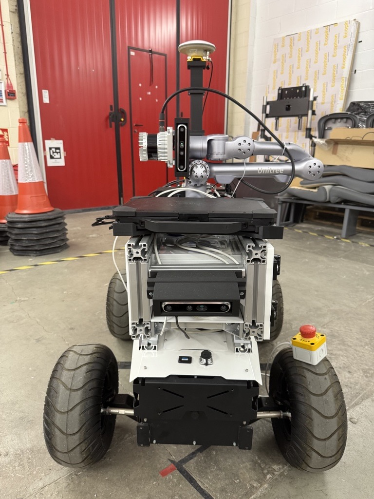
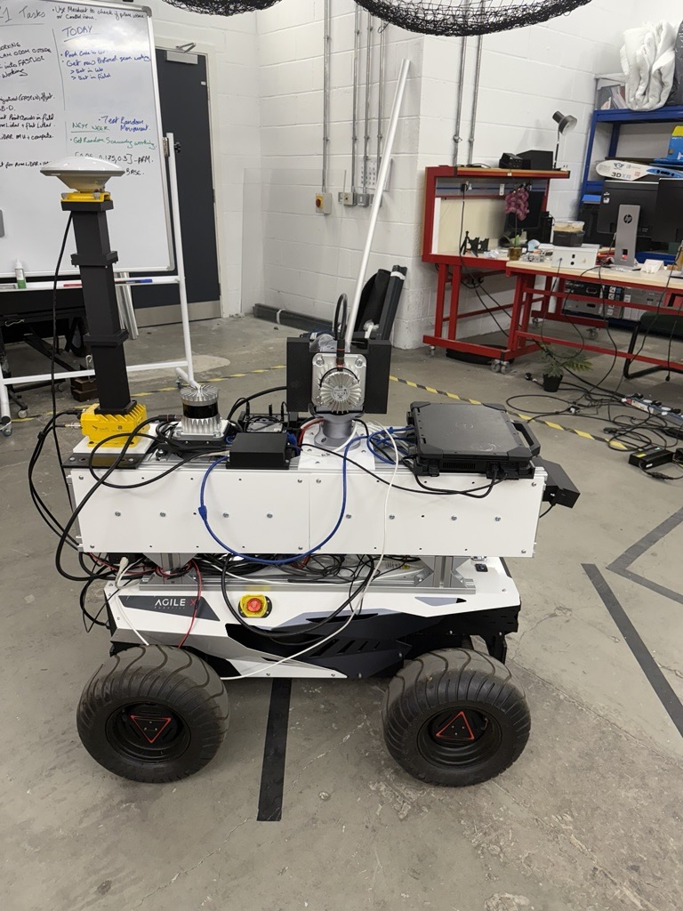
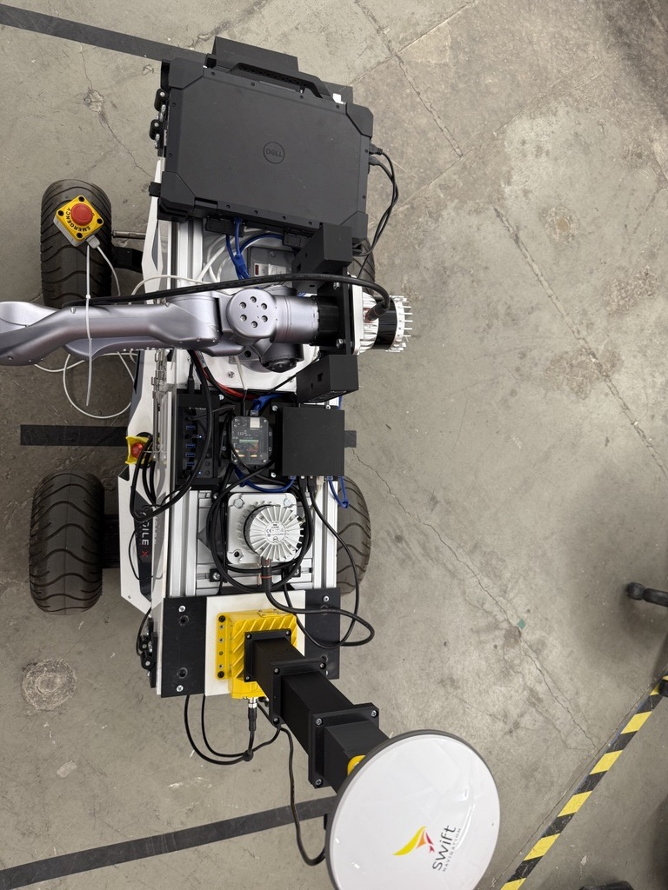
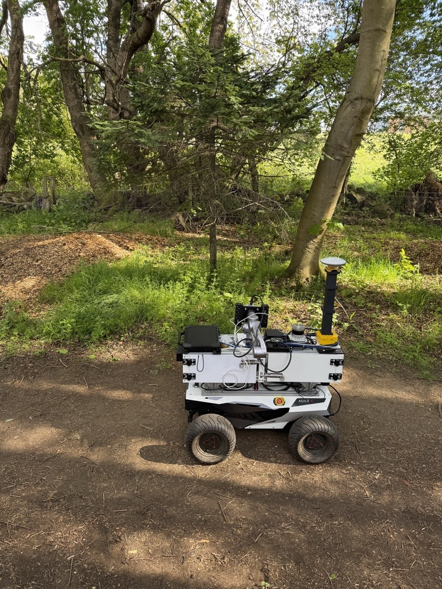
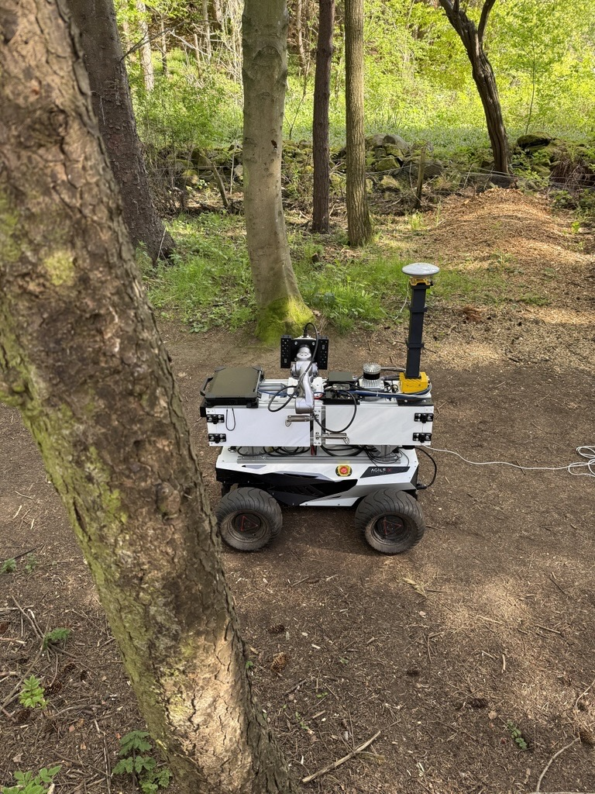

ForestYear3D: A Year-Long Dual-LiDAR Point Cloud Dataset for Long-Term Forest Robotics
1The University of Edinburgh, UK
2Heriot-Watt University, UK
3Harper Adams University, UK
Manuscript under review, 2026. Preprint and dataset DOI to follow.
The code is kept private until the paper is published. It will be released here alongside the dataset.
Point clouds across the seasons
The same 48 m of forest, reconstructed month after month
Every traversal in ForestYear3D covers the same forest corridor, and every reconstruction is registered into one common map frame. Playing those aligned point clouds in sequence shows what the dataset is really about: persistent woody structure staying put while foliage, understorey and occlusion change around it — and then, in March 2026, several trunks disappearing entirely when the site was thinned.
Abstract
Long-term forest robotics requires perception and planning systems that remain reliable as vegetation, occlusion, and scene structure change across seasons. However, few public datasets provide raw robotic sensor data, repeated forest traversals, active sensing protocols, and temporally aligned point clouds over a full annual cycle. This paper presents ForestYear3D, a year-long forest robotics dataset collected on a forested trail at Heriot-Watt University's Edinburgh campus using ALFRED, a dual-LiDAR mobile manipulator equipped with a base-mounted LiDAR and an end-effector-mounted LiDAR. The dataset spans June 2025 to May 2026 and contains 29 days of data collection, 31.68 hours of raw ROS bag recordings, 4.9 TB of raw sensor data, and 528 processed acquisitions.
ForestYear3D captures leaf-on and leaf-off variation, natural disturbance, and management-induced forest thinning. The release includes raw ROS bags, base and arm point clouds, merged and temporally aligned point cloud products, calibration files, weather metadata, manual stem-circumference measurements, and reference-tree annotations. We provide a baseline processing pipeline for LiDAR–inertial mapping, base–arm point cloud fusion, temporal registration, and preservation-first scan cleaning. We also characterise the processed release using merge, alignment, cleanup, and seeded stem-measurement diagnostics. Example applications demonstrate active LiDAR coverage analysis, repeated stem-circumference estimation, segmentation pre-labelling, and ground-referenced visibility planning. ForestYear3D is intended as a benchmark and development resource for long-term autonomous forestry monitoring in changing natural environments.
Keywords: forest robotics · LiDAR point clouds · long-term mapping · mobile manipulation · active perception · forestry datasets · seasonal change
Dataset at a glance
One forest corridor, one full year
Collection
Acquisitions
Raw data
Site and sensing
Main sensing modalities: base LiDAR, arm LiDAR, IMU, and manipulator joint states. Supplementary metadata: hourly weather records and manual stem measurements. The dataset is released under CC BY 4.0.
Collection schedule
Survey windows were scheduled monthly. In September, October, March and April a second window was added to catch the rapid change around leaf emergence and senescence. Collection was avoided during rain and strong wind, so the dataset represents dry, relatively calm operating conditions.
| Year | Month | First survey window | Second survey window |
|---|---|---|---|
| 2025 | June | 2, 10, 11 | — |
| July | 10, 11 | — | |
| August | 18, 20 | — | |
| September | 5 | 16, 22 | |
| October | 6, 8 | 17 | |
| November | 7, 10 | — | |
| December | 2, 3, 5 | — | |
| 2026 | January | 7, 8, 12 | — |
| February | 9, 13 | — | |
| March | 3 | 20, 23 | |
| April | 7 | 22 | |
| May | 11 | — |
Dates are day-of-month. Bold months are the seasonal transition periods where two windows were collected.
The robot in the field
ALFRED on the trail, summer to spring
Footage of the platform actually working the corridor: the same route, the same start and end trees, under four very different sets of conditions. This is the context the point clouds come from — narrow trail, roots and uneven ground, vegetation crowding in on both sides, and a manipulator waving a LiDAR through it all.
Site and platform
ALFRED, a dual-LiDAR mobile manipulator
The site is a narrow, heterogeneous forest trail on Heriot-Watt University's Edinburgh campus, with trees and understorey vegetation on both sides of the robot path. The terrain is relatively flat but has exposed roots and local surface irregularities. Traversals run from (55.910274, −3.328794) to (55.910507, −3.328239) — roughly 48 m.
Data was collected with ALFRED (Autonomous Leaf and Forest Research Exploration Device), a mobile manipulator built from commercially available components:
Mobile base
AgileX Hunter 2.0, Ackermann-steered, teleoperated at a commanded speed for each run.
Manipulator
Unitree Z1, six degrees of freedom, carrying the sensing head through the corridor.
Base LiDAR
Ouster OS1-32, fixed to the base — dense coverage of the trail, lower stems and understorey.
Arm LiDAR
Ouster OS1-32, mounted on the end-effector — elevated, actively varied views of branches and canopy.
Inertial
InertialSense RUG-3-IMX-5-RTK, used by the LiDAR–inertial mapping pipeline.
Onboard compute
Dell Latitude 7330 rugged laptop for data logging and experiment control.
GNSS and RGB-D sensors are fitted to the platform, and GNSS/INS streams are present in the ROS bags, but neither is used as mapping ground truth in the baseline pipeline — canopy cover degrades satellite localisation, which is exactly the condition the dataset is meant to represent. RGB-D image and depth streams were not recorded during the traversals. The main calibrated extrinsic, base LiDAR to IMU, was estimated with LiDAR-IMU Init and ships with the release, along with the URDF and ROS configuration files.



Start and end of a traversal
Every run used the same two natural landmarks rather than a surveyed marker. The robot was positioned with its front wheels aligned to the start tree, the arm motion was started, and only then did the base set off. The traversal ended when the front wheels passed between the two trees at the far end of the corridor, roughly 48 m away.


Robot protocols
Five scanning strategies, 33 traversals per survey window
The point of a LiDAR on the end of an arm is that you can move it. Each survey window runs the same acquisition matrix so the effect of that motion can actually be measured: three commanded base speeds (vb ∈ {0.25, 0.50, 0.75} m s−1) crossed with one fixed-arm baseline, one random arm-motion strategy, and three deterministic arm-motion protocols, the deterministic ones additionally run at three commanded arm speeds (q̇a ∈ {0.05, 0.175, 0.30} rad s−1).
That gives 33 traversals per complete survey window: three fixed-arm, three random-motion, and 27 deterministic-protocol runs — 528 across the year.
What each strategy does
- Fixed-arm baseline
- The manipulator stays stationary relative to the base throughout the traversal, held at 90° with the top of the arm-mounted LiDAR facing the direction of travel. The base still drives the corridor at the commanded speed — only the arm motion is removed. This is the closest equivalent to a rigidly mounted sensor, and it is the control that tells you whether active motion buys anything.
- Random arm motion
- End-effector targets are sampled in the base footprint frame within [−0.3, −0.4, 0.75] ≤ [x, y, z] ≤ [0.5, 0.4, 1.4] metres, with no constraint on orientation, and commanded arm speed sampled uniformly between 0.05 and 0.20 rad s−1. It tests whether unstructured motion helps without a predefined scanning pattern.
- Deterministic protocols 1–3
- Predefined waving motions perpendicular to the direction of travel, defined in joint space as smooth Bézier trajectories centred on the nominal midpoint configuration qmid = [0, 1.5, −2.87, 0, 0, 0], with the trajectory duration adjusted to realise the commanded arm speed. Protocol 1 varies joint 2 between 1 and 2 rad — mainly translational viewpoint change. Protocol 2 varies joint 4 between −1 and 1 rad — mainly rotational. Protocol 3 varies both over the same ranges, giving combined translational and rotational variation and the broadest active coverage. Each is run at all nine base-speed × arm-speed combinations.
The base was teleoperated rather than autonomously path-following, which was the safe choice in a narrow corridor with roots, uneven ground and changing seasonal structure. The start and end landmarks are fixed, but realised trajectories are not identical: lateral position, heading, steering corrections and traversal duration vary between runs, and that variation should be accounted for when comparing protocols.
Citation
@article{johnson2026forestyear3d,
title = {ForestYear3D: A Year-Long Dual-LiDAR Point Cloud Dataset
for Long-Term Forest Robotics},
author = {Johnson, Ciar{\'a}n Miceal and Quail, Christopher and
Singh, Prabhneet and Tonneau, Steve and
McConnell, Alistair and Auat Cheein, Fernando},
year = {2026},
note = {Manuscript under review}
}